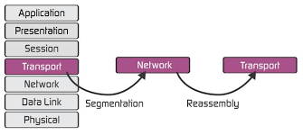

Why OSI?
To get hardware and software manufacturers to agree on a framework for developing networking technologies, so devices could work together.OSI Model Versus TCP/IP Model
The OSI Reference Model was intended to serve as the foundation for the establishment of a widely-adopted suite of protocols that would be used for networking, and the Internet. This was called the OSI Protocol Suite.
However, the rise in popularity of the Internet and its TCP/IP protocols made the TCP/IP model more popular - TCP/IP won.
OSI Settles Network Complexity
The OSI model became a medium for explaining how networks function. Even if technologies are not designed to match the OSI model, many are described in terms of how they fit into its layers. This includes networking protocols, software applications, and hardware devices, like switches and routers.
Application Layer
The application layer is for end-user software like web browsers and email. It provides protocols for software to send and receive information and present data to users.Protocols
Application layer protocols include the Hypertext Transfer Protocol (HTTP), File Transfer Protocol (FTP), Post Office Protocol (POP), Simple Mail Transfer Protocol (SMTP), and Domain Name System (DNS).
Key Responsibilities
The Application Layer
- provides a facility for users to exchange e-mail
- enables file retrieval from a remote computer
- enables remote logins
Presentaton Layer
The presentation layer prepares data for the application layer. It defines how two devices should encode, encrypt, and compress data to be correctly exchanged.Algorithms
The presentation layer takes care of any issues in changing transmitted data to a format different from the original format. This layer incorporates a lot of data conversion algorithms and character translation functions.
Encryption
If two or more devices are communicating over an encrypted connection, presentation layer is responsible for adding encryption on the sender’s end and decoding the encryption on the receiver’s end so that it can give the application layer unencrypted, readable data.
Protocols
The Presentation layer deals with SSL, HTTP/ HTML (agent), FTP (server), AppleTalk Filing Protocol,Telnet.
Session Layer
The session layer controls connections between multiple computers, or sessions. This layer establishes, controls and ends the sessions between local and remote applications.Protocols
Sessions are most commonly implemented on Web browsers using protocols such as the Zone Information Protocol, the AppleTalk Protocol and the Session Control Protocol. These protocols also manage session restoration through checkpointing and recovery.
Responsibilities
The session layer
- supports full-duplex and half-duplex operations
- creates procedures for checkpointing, restart and termination
- synchronizes information from different sources
Transport Layer
 The Transport layer deals with point-to-point communication - managing, establishing, and closing communication between two specific networked devices.
Protocols
This layer is also responsible for flow control and making sure that segmented data is delivered over the network in the correct sequence. The Transport layer uses transmission control protocol (TCP) and user data protocol (UDP)
Responsibilities
The Transport layer oversees
- flow control, insures packets are transmitted and received at a supportable rate
- assembly, insuring packets transmitted have been received and assembled in the correct order
- acknowledgement, providing heads-up to transmitter upon reception of error-free packet
- requesting re-transmission to transmitter if defective packet received
Network Layer
 The network layer provides data routing paths for network communication. Data is transferred to the receiving device in the form of packets via logical network paths in an ordered format.
The network layer provides data routing paths for network communication. Data is transferred to the receiving device in the form of packets via logical network paths in an ordered format.
Responsibilities
Logical connection setup, data forwarding, routing and delivery error reporting are the network layer’s primary responsibilities.
Backbone of OSI Model
The network layer is the backbone of the OSI Model. It selects and manages the best logical path (virtual circuit) for data transfer between nodes by assigning destination and source IP addresses to each data segment.
Protocols
The network layer uses ARP (Address Resolution Protocol), ICMP (Internet Control Message Protocol), IPV4 (IP Version 4 addressing) and IPV6 (IP Version 6 addressing).
DataLink Layer
The data link layer of the OSI consists of two sublayers - the Media Access Control (MAC) sublayer and the Logical Link Control (LLC) sublayer. The MAC sublayer controls device interaction. The LLC sublayer deals with addressing.Data Streams To Bits
The Data link layer is responsible for converting data streams to signals bit by bit and sending via underlying hardware. At the receiving end, the Data link layer picks up data from hardware in the form of electrical signals, assembles them in a recognizable frame format, and hands over to upper layers.
Frames
The Data-link layer takes packets from the Network Layer and encapsulates them into Frames.Then, it sends each frame bit-by-bit on the hardware. At the receiver, data link layer takes signals from hardware and assembles them into frames.
Error Detection
Sometimes signals are not transmitted correctly, bits are flipped.These errors are detected and recovery of the bits is attempted at the Data Link layer data. It also provides error reporting to the sender.
Physical Connections
This layer plays with most of the network’s physical connections—wireless transmission, cabling, cabling standards and types, connectors and types, network interface cards, and more —as per network requirements.
Physical Layer
Translation
The Physical Layer translates the information from the data-link layer into electromagnetic signals (binary data) to send over the wires or the wireless media. These signals are either digital signals (electrical pulses) or analog signals (continuous electromagnetic waves).
Efficiency
The physical layer plays an important role in sharing available communication resources and helps avoid contention among multiple users. It also handles the transmission rate to improve the flow of data between a sender and receiver.